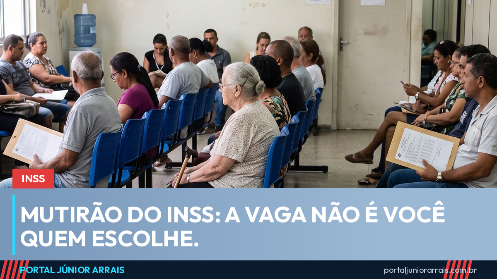

Mutirão de perícia do INSS: como funciona a convocação e por que você não escolhe a vaga

O INSS abriu 10 mil vagas extras de perícia médica e avaliação social no fim de semana de 15 e 16 de agosto, em agências de todo o país. Não foi um caso isolado: o instituto vem repetindo mutirões quase todo mês, e o maior deles neste ano ofereceu 59 mil vagas de uma só vez.
A dúvida que mais aparece é sempre a mesma: por que uma pessoa é chamada e a vizinha, que pediu o benefício no mesmo mês, não é.
Como a convocação funciona
O mutirão não abre inscrição. Ele é montado a partir da fila que já existe, e o sistema do INSS é quem seleciona os pedidos que serão encaixados, considerando fatores como:
- o tempo que o requerimento está aguardando análise;
- a agência de referência do segurado e a existência de sala de perícia disponível naquela cidade;
- o tipo de benefício pedido, já que perícia médica e avaliação social são feitas por profissionais diferentes;
- a capacidade de atendimento de cada unidade no dia do mutirão.
Por isso a vaga não é escolhida pelo segurado. Quem é encaixado recebe o aviso pelos canais oficiais do próprio INSS, com data, hora e local definidos.
O que acontece se a pessoa faltar
Faltar sem justificativa costuma ser caro. O pedido pode ser indeferido por ausência à perícia, e o segurado volta para o fim da fila quando faz o requerimento de novo — perdendo, muitas vezes, meses de espera. Quando existe um motivo real que impediu o comparecimento, como internação ou impossibilidade de locomoção, esse motivo precisa ser demonstrado, e não simplesmente alegado depois.
O laudo é o que decide
Mutirão acelera a data, não o resultado. Quem chega à perícia sem documentação médica organizada tende a sair com o benefício negado do mesmo jeito, só que mais cedo. Relatório do médico que acompanha o caso, exames com data legível, receituário e histórico de afastamentos são o que sustenta a conclusão do perito.
Cuidado com golpe
Sempre que o INSS anuncia mutirão, cresce a oferta de gente prometendo "antecipar sua perícia", "furar a fila" ou "garantir a aprovação" mediante pagamento. Não existe fila paralela: o encaixe é feito pelo sistema do próprio instituto, e ninguém de fora tem acesso para movimentar a posição de um segurado. Também circulam mensagens dizendo que a perícia foi cancelada e que é preciso confirmar dados por um link — o objetivo é capturar senha e informação pessoal.
Nenhum órgão do governo cobra taxa nem pede Pix, senha ou foto de documento para marcar perícia. Se o seu pedido está parado há muito tempo, se a perícia foi remarcada sem explicação ou se o benefício foi negado, procure um profissional de sua confiança para examinar o processo e entender o motivo antes de refazer o pedido do zero.
Conteúdo informativo — não substitui orientação individualizada sobre o seu caso.